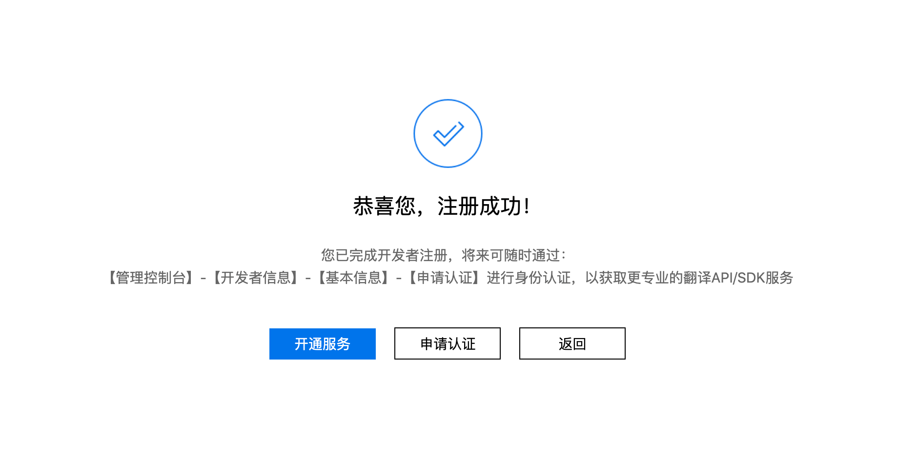
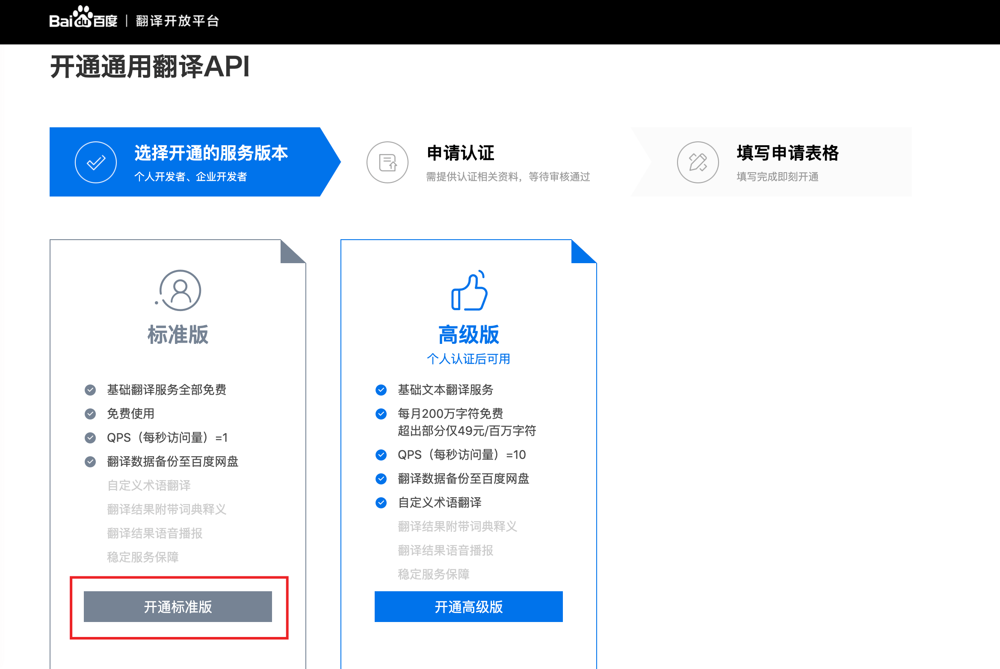

以下資訊僅供參考，請以服務商官網最新資訊為准。更新時間：2020年4月27日。
0. 收費模式
| 服務 | 免費額度 | 超出免費額度 | 併發請求數 |
|---|---|---|---|
| 通用翻譯API（標準版） | 完全免費，無限使用👍 | 1次/秒 | |
| 通用翻譯API（高級版） | 每月200萬字元 | 49元/100萬字元 | 10次/秒 |
| 通用翻譯API（尊享版） | 每月200萬字元 | 49元/100萬字元 | 100次/秒 |
1.注册登入

2.注册開發者
登入完成之後，點擊該網頁下方的「立即使用」按鈕，然後點擊「開始注册」

接下來填寫個人資訊，請如實填寫，完成之後點擊「下一步」

如果你準備使用標準版，直接點擊「暫不認證」即可；如果想使用高級版，需填寫真實的姓名以及身份證號進行認證

看到這個提示就代表注册開發者成功了，這個時候直接點擊「開通服務」

3.開通通用翻譯API
注册完成開發者之後，點擊「開通服務」即可進入開通服務頁面，如果剛才忘了點擊，可以點擊此處跳轉開通服務頁面
選中「通用翻譯API」，然後點擊「下一步」

點擊「開通標準版」（如果你想使用「高級版」，也可以點擊「開通高級版」，不過你需要填寫身份證進行認證）

填寫應用名稱，可以隨意填寫，其他的不用填。然後勾選「我已知曉翻譯API計費規則」，點擊「我已瞭解，確認開通」

當你看到如下提示則代表開通成功了

4.獲取秘鑰

5.填寫秘鑰
在翻譯引擎管理頁面，點擊「百度翻譯」的「設定秘鑰」，然後將剛才獲取到的秘鑰填寫到對應位置即可。